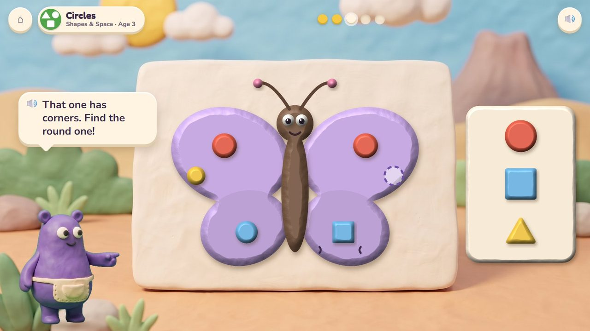
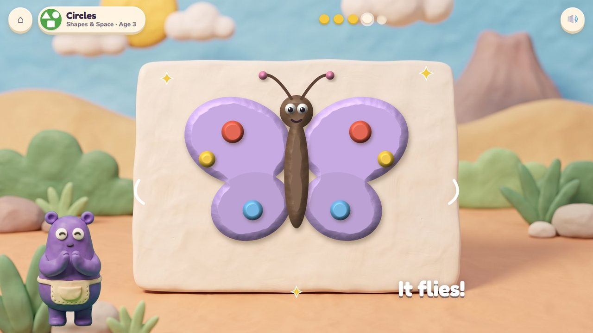
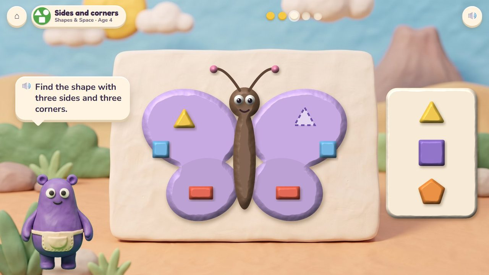
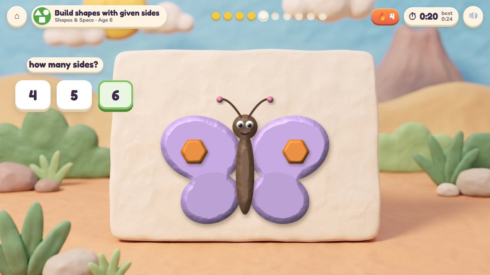
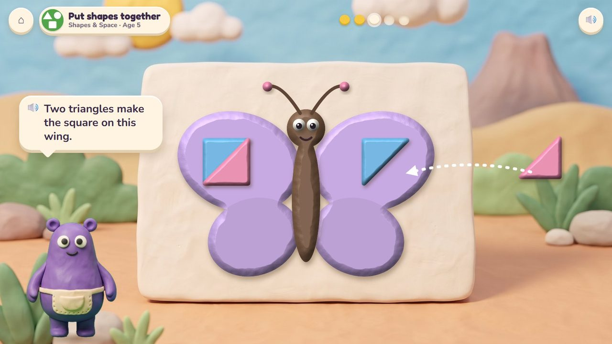
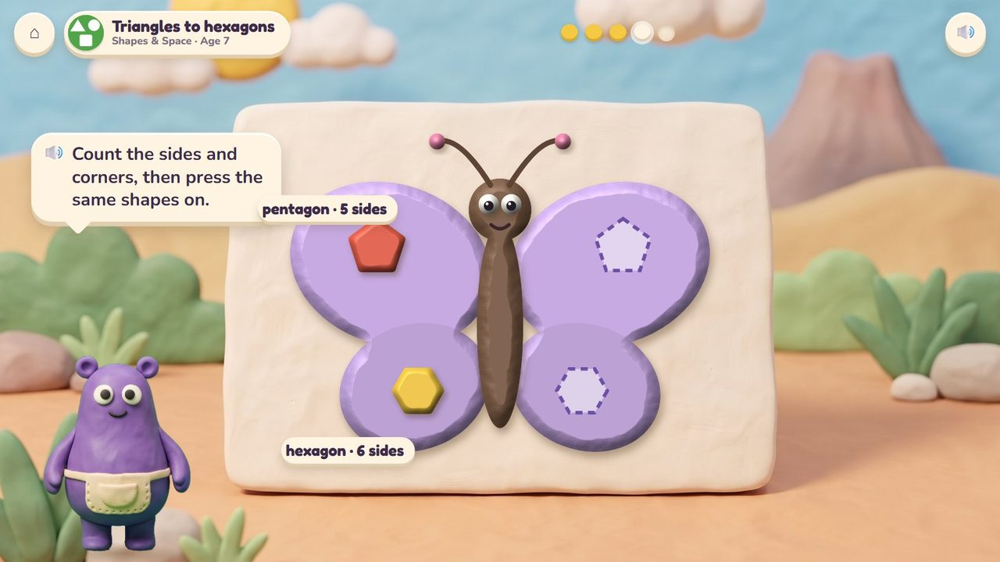

Mirror Wings
Press the same shapes on the butterfly's other wing, like a mirror, and it flies.
30 lessons (21 taught here first, the rest practised here) in 3 topics:
Fractions & DecimalsShapes & SpacePatterns & Graphs

The game
One wing of Mumba's clay butterfly is decorated with shapes; the other is bare, with dashed places. The child presses the same shapes onto it in the mirror places: circles, squares and triangles for the little ones, then shapes named by their sides and corners, two triangles that make a square, five- and six-sided shapes. When both wings match, the butterfly flies off to the Critter Garden. This is the shapes game.
Hands-on
Drag shapes from the tray, turn them, press them on.
The end of a round
The butterfly flaps both wings and flies to the Critter Garden.
How it plays
A storyboard of the game in one lesson, drawn from the app's own clay pictures.
1Make them match
Circles, age 3: press circles in the dashed places.
🔊 “Make this wing the same as that one!”

2Not that one
A square has corners; a circle is round.
🔊 “That one has corners. Find the round one!”

3It flies!
Both wings match: off it flies.

4Sides and corners
Age 4: find the shape with three sides and three corners.
🔊 “Find the shape with three sides and three corners.”

5The quick round
Age 6: how many sides? 6. Timed.
The quick round (from age 6)
A shape on the wing: tap how many sides (3, 4, 5, 6). Ten questions at 6-7, a 60-second round from 8; your time and your best on screen; only right answers count; a miss shows the answer and comes back later. No clock under 6.
The same game, other lessons and ages
The badge at the top left says the topic, the lesson and the age.

6Put shapes together · age 5
Two triangles make the square on this wing.

7Triangles to hexagons · age 7
A pentagon has five sides, a hexagon six: press the same shapes on.
From age 3 to 7
| Age 3Pre-school | Circles, squares, triangles; find the same shape; sort by shape. |
| Age 4Pre-K | Rectangles and ovals; turned and tipped shapes; sides and corners; a picture from shapes. |
| Age 5Kindergarten | Name flat shapes of any size or turn; flat or solid; compare, build and put shapes together. |
| Age 6Grade 1 | What makes a triangle; shapes with given sides; flat shapes together; half and quarter circles. |
| Age 7Grade 2 | Triangles to hexagons; count angles and faces; a rectangle split into squares. |
What changes from lesson to lesson
The shapes
circle, square, triangle; then rectangle, oval, pentagon, hexagon, half and quarter circles
The task
match, name, count sides and corners, put two shapes together
Help
dashed places show where; Mumba names each shape as it goes on
How you answer
drag and turn; one tap for the quick round
Its 30 lessons
Age by age they are on the full list; here grouped by topic (the first activity named teaches a lesson, the others practise it).
Fractions & Decimals 3
- Halves
1.G.3Chocolate Snap · Mirror Wings - Quarters
1.G.3Chocolate Snap · Mirror Wings - Halves, thirds and quarters
2.G.3Chocolate Snap · Mirror Wings
Shapes & Space 25
- Circles
early yearsMirror Wings - Squares
early yearsMirror Wings - Triangles
early yearsMirror Wings - Find the same shape
early yearsMirror Wings · Critter Maker - Rectangles and ovals
early yearsMirror Wings - Shapes turned and tipped
early yearsMirror Wings - Sides and corners
early yearsMirror Wings · Critter Maker - Ball, box and can
early yearsTreasure Shop · Mirror Wings - Make a picture from shapes
early yearsMirror Wings - Name flat shapes
K.G.2Mirror Wings - Shapes of any size or turn
K.G.2Mirror Wings - Flat or solid?
K.G.3Mirror Wings · Treasure Shop - Cube, cone, cylinder, sphere
K.G.2Treasure Shop · Mirror Wings - Compare shapes
K.G.4Mirror Wings - Build shapes
K.G.5Mirror Wings - Put shapes together
K.G.6Mirror Wings - What makes a triangle?
1.G.1Mirror Wings - Build shapes with given sides
1.G.1Mirror Wings - Put flat shapes together
1.G.2Mirror Wings - Put solid shapes together
1.G.2Treasure Shop · Mirror Wings - Half circles and quarter circles
1.G.2Mirror Wings · Chocolate Snap - Triangles to hexagons
2.G.1Mirror Wings - Count angles and faces
2.G.1Mirror Wings · Treasure Shop - Cubes
2.G.1Treasure Shop · Mirror Wings - Split a rectangle into squares
2.G.2Chocolate Snap · Mirror Wings
Patterns & Graphs 2
- Sort by shape
early yearsMirror Wings · Critter Maker - Make your own pattern
early yearsCritter Maker · Mirror Wings
Questions
- Is one butterfly enough, or should other critters (a fish, a bird) take turns?
- Anything in the storyboard to change (say the frame number)?